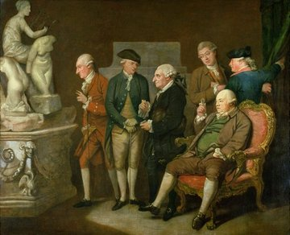

Towneley from A to Z

Towneley from A to Z
Richard Cosway (1742-1821) painted the Group of Connoisseurs, in which Charles Townley and his friends discuss ancient sculpture, was painted in 1775 when Townley was living in Whitehall. The work was purchased as lot 75 Christie's, June 1st 1956 ( Pa/Oil 195 ).
The people from left to right are
In Charles Townley's account book there is an item for 14/10/1775 - "To Mr. Cosway for his picture with 6 portraits £100". It is believed this picture was painted in Cosway's studio rather than Charles Townley's house in Whitehall. The house itself was quite small and the rococo chair in which Chase Price is sitting appears in other paintings by Cosway. The chair by Matthias Lock is now in the Victoria and Albert Museum in London.